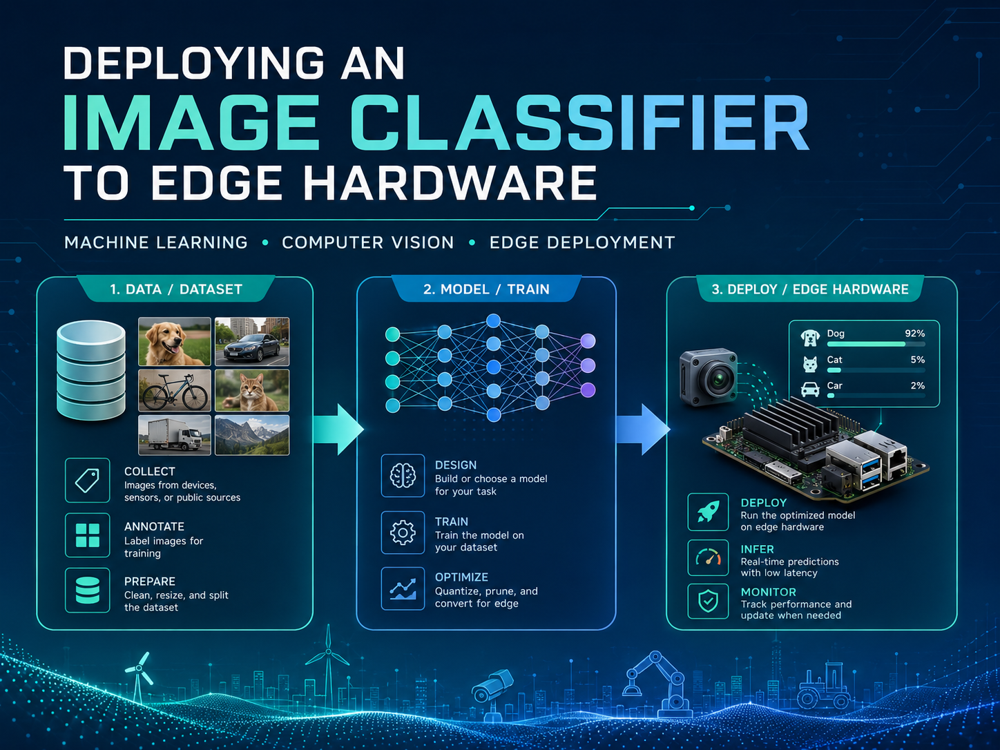

Machine learning and anomaly detection
Data workflows, model evaluation, supervised learning and operational anomaly analysis.
Applied AI engineering · RAG reliability specialization
VerbaEdge Systems brings together machine learning, computer vision, embedded and Edge AI, Python automation, LLM evaluation and AI safety. Our specialized RAG debugging practice diagnoses retrieval, citation and document-permission failures in existing applications.
Practical engineering. Defined scope. Verifiable outcomes.
01 / AI & Edge AI engineering
Our engineering work includes model development and evaluation, software integration and hardware-aware AI. We define feasibility, scope and verification criteria before implementation.
Data workflows, model evaluation, supervised learning and operational anomaly analysis.
Hardware-aware inference, visual processing and embedded AI prototypes.
Yocto-based Linux workflows, device integration and systems engineering.
Application interfaces, data processing, evaluation utilities and technical automation.
LLM workflow evaluation, retrieval design, context assembly and integration patterns.
Scoped technical risk review of AI and cyber-physical systems, not compliance certification.
02 / GenAI & RAG engineering
Alongside our broader AI engineering work, we support scoped LLM prototypes, document assistants, supervised agents and evaluation. Existing RAG applications can be assessed through a focused reliability and access-control debugging service.
Build GenAI tools such as internal assistants, customer-support apps, content workflows, document Q&A systems, and business-facing LLM utilities.
Create chatbot applications that answer from company documents, use retrieval workflows, cite source material, and support practical business use cases.
Design supervised AI-agent workflows connected to APIs, files, forms, databases, notifications, and approval steps.
Improve prompts, test LLM behavior, design evaluation criteria, compare outputs, and create scoring plans for quality, consistency, and reliability.
For an existing RAG system, start with a reproducible retrieval, citation or document-permission failure. Explore the detailed RAG service →
Scoped engagements
Depending on the real problem, work may begin with a technical risk review, an LLM proof of concept or an Edge AI prototype. Acceptance criteria and deliverables are agreed before work starts.
Technical review
Review an LLM application, RAG chatbot, AI-agent workflow, automation pipeline, or edge-AI deployment for practical safety and security risks before it is trusted in real operations.
Typical output: prioritized risk findings, practical fixes, and a safer deployment plan.
Prototype sprint
Build a focused proof of concept for a business-facing AI tool, such as a document assistant, RAG chatbot, internal knowledge assistant, prompt workflow, or supervised AI-agent process.
Typical output: working prototype, scope notes, and next-step implementation plan.
Engineering sprint
Design or review a computer-vision, embedded-AI, or edge-inference workflow for real-world data, camera input, hardware constraints, and deployment reliability.
Typical output: feasibility review, prototype plan, or deployable proof-of-concept workflow.
Specialized GenAI / RAG service
Bring an existing RAG application and a repeatable problem. We trace the relevant pipeline, agree on a focused change and verify the outcome with regression tests.
Missing documents, irrelevant chunks, stale content, and metadata or search-filter problems.
Unsupported answers, missing details, context assembly, and incorrect source attribution.
Document permissions, tenant isolation, and preventing unauthorized retrieval context.
Reproducible failures, root-cause analysis, bounded corrections and regression tests.
Primary offer
A bounded engagement for one reported problem in an existing RAG application, with a targeted fix when the root cause is addressable within the agreed scope.
Typical output: root-cause summary, scoped code change, test results, and remaining issues or risks.
Ask about a fix sprintDiagnostic review
For teams seeing inconsistent answers but unsure whether the problem starts in document processing, retrieval, or generation.
Typical output: concise diagnostic findings and a scoped fix recommendation; implementation is separately agreed.
Targeted security check
Review whether an existing RAG retrieval path respects the intended document and organization permissions before text reaches the model.
Typical output: focused engineering findings and remediation suggestions, not a penetration test or compliance audit.
Engagement scope is confirmed before work begins. Broader architectural problems, multiple unrelated bugs, full rebuilds, and comprehensive security audits require a separate agreement.
Explore the full set of retrieval, citation, test and authorization checks on our RAG specialist service page →
Our engineering background spans machine learning, Edge AI, embedded systems, Python, LLM evaluation and AI safety. These skills inform both engineering areas.
VerbaEdge's technical project lead, Bernard Ngabonziza, brings a PhD in Computer Engineering from Arizona State University and a technical background spanning LLM evaluation and RAG-style research workflows, machine learning, Edge AI, computer vision, embedded AI, and security and safety considerations in cyber-physical systems.
The team's wider engineering capabilities also span Python automation and APIs, C++ and Linux, trusted execution environments, anomaly detection, model deployment, AI-agent workflows, and technical documentation. For existing RAG systems, these skills support disciplined debugging, performance evaluation and secure handling of retrieved content.
Our approach emphasizes reproducible failures, focused fixes and test evidence. Formal penetration tests and compliance certification are outside the scope of this service.
Browse documented Edge AI and embedded-engineering work, together with three independent synthetic RAG debugging demonstrations.
Additional technical samples demonstrate image classification, C++ inference workflows and embedded Linux engineering.

Goal: Build a repeatable workflow for training, validating, and deploying an image-classification model to edge hardware.
Contribution: Labeled image-data preparation, transfer-learning model training, test-data validation, and deployment of the trained model to an edge target using a deployment library.
Outcome: A documented edge-AI workflow from dataset preparation through local image classification on the target device.

Goal: Create a C++ edge-AI application that can use camera input and run a deployed AI model efficiently on embedded hardware.
Contribution: Integrated an AI model into a C++ Linux application, configured the build workflow, and connected camera input for inference.
Outcome: A documented path for compiling and running a camera-based image-classification application with accelerated model inference.

Goal: Build a custom Yocto-based Linux image for an edge device and establish a repeatable network-boot workflow from a Linux host.
Contribution: Configured the Linux build environment, source layers, image creation workflow, board setup, and NFS-based network boot preparation.
Outcome: A reproducible embedded-Linux workflow for building and deploying a board-specific operating-system image.
Independent technical demonstrations using synthetic documents, not client work or production RAG deployments. The before/after measurements apply only to each included test fixture.
Retrieval diagnosis
Reproduced failure: indexed policies missing because metadata keys were inconsistent and stale records were eligible for retrieval.
Targeted correction: normalize metadata, filter active/versioned documents, and verify expected sources.
Fixture result: Hit@1: 50% → 100% across 4 synthetic questions; 5 tests passed.
Read case studyAnswer reliability
Reproduced failure: citation identifiers pointed to the wrong sources after retrieved passages were reordered.
Targeted correction: bind citations after reranking and pack complete passages within a context budget.
Fixture result: citation-provenance pass rate: 0% → 100% across 3 cases; 5 tests passed.
Read case studyDocument-access boundaries
Reproduced failure: shared retrieval made cross-tenant and role-restricted document chunks available to downstream context.
Targeted correction: authorize before ranking, fail closed, and test role and tenant boundaries.
Fixture result: requests without unauthorized chunks: 0% → 100% across 5 cases; 8 tests passed.
Read case studyEach demonstration includes test fixtures, a failing baseline, a focused correction, and runnable Python tests. Download the three reproducible sample projects (ZIP)
Relevant applications span software products, internal knowledge workflows, device-level AI, inspection systems and technical subcontracting. Each engagement is scoped to the actual team and system.
GenAI chatbots, internal assistants, AI-agent workflows, document Q&A, customer-support automation, and safety/security-aware prototypes.
Monitoring, decision-support, anomaly-detection concepts, AI-assisted workflow tools, and safety/security-aware system review.
Field data, predictive monitoring, operational-deviation review, edge intelligence, and automation for operational teams.
Computer-vision prototypes, image analysis, inspection workflows, anomaly detection, and safety/security-aware automation.
Technical subcontracting, proposal support, prototype execution, AI capability language, and AI safety/security review.
Tell us about an AI/Edge AI project, an LLM workflow or a specific problem in an existing RAG application. We can scope a targeted technical review, prototype or debugging engagement.
Share the relevant environment and desired outcome. For RAG problems, include representative failing questions if appropriate. Do not email credentials, secrets or confidential documents.
VerbaEdge provides scoped technical engineering review and remediation for AI systems. RAG security checks are not formal penetration testing, regulatory compliance certification, or guarantees of complete security or error-free answers.